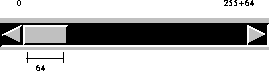

Packages This Package Prev Next Index
§1.37 Class Scrollbar
public class java.awt.Scrollbar
extends java.awt.Component (II-§1.10)
{
// Fields
public final static int HORIZONTAL; §1.37.1
public final static int VERTICAL; §1.37.2
// Constructors
public Scrollbar(); §1.37.3
public Scrollbar(int orientation); §1.37.4
public Scrollbar(int orientation, int value, §1.37.5
int visible, int minimum, int maximum);
// Methods
public void addNotify(); §1.37.6
public int getLineIncrement(); §1.37.7
public int getMaximum(); §1.37.8
public int getMinimum(); §1.37.9
public int getOrientation(); §1.37.10
public int getPageIncrement(); §1.37.11
public int getValue(); §1.37.12
public int getVisible(); §1.37.13
protected String paramString(); §1.37.14
public void setLineIncrement(int l); §1.37.15
public void setPageIncrement(int l); §1.37.16
public void setValue(int value); §1.37.17
public void setValues(int value, int visible, §1.37.18
int minimum, int maximum);
}
A scroll bar provides a convenient means of allowing a user to select from a range of values. For example, the following three scrollbars could be used to pick the each of the red,
green, and blue components of a color :
:
Each scrollbar was created with the code like the following:
Alternatively, a scroll bar can represent a range of values. For example, if using a scrollbar
for scrolling through text, the width of the "bubble" can represent the amount of text visible. Here is an example of a scrollbar representing a range:
The value range represented by the bubble is the visible amount of the scrollbar.
The code to produce the above scrollbar is
Note that the maximum value above, 255, is the maximum value for the "left side" of the
scroll bar.
In addition, whenever the user changes the value of the scroll bar, AWT sends one of the
following five events to the user:
The event's target is the scroll bar, and its object is an Integer (I-§1.8) giving the value represented by the scroll bar
If an application wants to perform some action when the value in a scroll bar is changed, it
must override handleEvent method of the scroll bar or of one of its containing windows. The
code to perform that should be of the following form:
public boolean handleEvent(Event event) {
if (event.target == scrollbar) {
do something
return true;
} else {
return super.handleEvent(event);
}
}

HORIZONTAL
public final static int HORIZONTAL = 0
- Constant indicating to construct a horizontal scroll bar.
VERTICAL
public final static int VERTICAL = 1
- Constant indicating to construct a vertical scroll bar.

Scrollbar
public Scrollbar()
- Constructs a new vertical scroll bar.
Scrollbar
public Scrollbar(int orientation)
- Constructs a new scroll bar with the specified orientation.
- The orientation argument must be one of the two values Scrollbar.HORIZONTAL (II-§1.37.1) Scrollbar.VERTICAL (II-§1.37.2) indicating a horizontal or
vertical scroll bar, respectively.
- Parameters:
orientation
- indicates the orientation of the scroll bar.
- Throws
- IllegalArgumentException (I-§1.32)
- When an illegal orientation is given.
Scrollbar
public Scrollbar(int orientation, int value, int visible,
int minimum, int maximum)
- Constructs a new scroll bar with the specified orientation, initial value,
page size, and minumum and maximum values.
- The orientation argument must be one of the two values Scrollbar.HORIZONTAL (II-§1.37.1) Scrollbar.VERTICAL (II-§1.37.2) indicating a horizontal or
vertical scroll bar, respectively.
- If the specified maximum value is less than the minimum value, it is
changed to be the same as the minimum value. If the initial value is lower
than the minimum value, it is changed to be the minimum value; if it is
greater than the maximum value, it is changed to be the maximum value.
- Parameters:
orientation
- indicates the orientation of the scroll bar.
value
- the initial value of the scroll bar
visible
- the size represented by the bubble in the scroll bar. The sroll bar
uses this value when paging up or down by a page.
minimum
- the minimum value of the scrollbar
maximum
- the maximum value of the scrollbar

addNotify
public void addNotify()
- This method calls the createScrollbar method (II-§1.41.18) of this object's
toolkit (II-§1.10.20) in order to create a ScrollbarPeer (II-§3.18) for this button. This peer allows the application to change the look of a scroll bar
without changing its functionality.
- Most applications do not call this method directly.
- Overrides:
- addNotify in class Component (II-§1.10.2).
getLineIncrement
public int getLineIncrement()
- Determines the line increment of this scrollbar, which is the amount that is
added or subtracted from this scroll bar's value when the user hits the
down or up gadget.
- Returns:
- the line increment of this scroll bar.
- See Also:
- setLineIncrement (II-§1.37.15).
getMaximum
public int getMaximum()
- Returns:
- the maximum value of this scroll bar.
- See Also:
- getMinimum (II-§1.37.9)
getValue (II-§1.37.12).
getMinimum
public int getMinimum()
- Returns:
- the maximum value of this scroll bar.
- See Also:
- getMaximum (II-§1.37.8)
getValue (II-§1.37.12).
getOrientation
public int getOrientation()
- Determines the orientation of this scroll bar. The value returned is either
HORIZONTAL (II-§1.37.1) or VERTICAL (II-§1.37.2)
- Returns:
- the orientation of this scroll bar.
getPageIncrement
public int getPageIncrement()
- Determines the page increment of this scroll bar, which is the amount that
is added to or subtracted from this scroll bar' value when the user hits the
page down or page up gadget.
- Returns:
- the page increment for this scroll bar.
- See Also:
- getsetPageIncrement (II-§1.37.16).
getValue
public int getValue()
- Returns:
- the current value of this scroll bar.
- See Also:
- getMinimum (II-§1.37.9)
getMaximum (II-§1.37.8).
getVisible
public int getVisible()
- Determines the "visible" amount of this scroll bar, which is the range of
values represented by the width of the bubble in this scroll bar.
- Returns:
- the "visible" amount of this scroll bar.
paramString
protected String paramString()
- Returns the parameter string representing the state of this scroll bar. This
string is useful for debugging.
- Returns:
- the parameter string of this scroll bar.
- Overrides:
- paramString in class Component (II-§1.10.51).
setLineIncrement
public void setLineIncrement(int l)
- Sets the line increment of this scroll bar.
- The line increment is the value that is added to or subtracted from the
value of this scroll bar when the user hits the line down or line up gadget.
- Parameters:
l
- the new line increment
- See Also:
- getLineIncrement (II-§1.37.7).
setPageIncrement
public void setPageIncrement(int l)
- Sets the page increment of this scroll bar.
- The page increment is the value that is added to or subtracted from the
value of the scroll bar when the user hits the page down or page up gadget.
- Parameters:
l
- the new page increment
- See Also:
- getPageIncrement (II-§1.37.11).
setValue
public void setValue(int value)
- Sets the value of this scroll bar to the specified value. If the specified value
is below this scroll bar's current minimum or above the current maximum,
it becomes the minimum or maximum value, respectively.
- Parameters:
value
- the new value of this scroll bar
- See Also:
- getValue (II-§1.37.12).
setValues
public void setValues(int value, int visible,
int minimum, int maximum)
- Sets several parameters of this scroll bar simultaneously..
- Parameters:
value
- the value of this scroll bar
visible
- the amount visible per page
minimum
- the minimum value of this scroll bar
maximum
- the maximum value of this scroll bar
Packages This Package Prev Next Index
Java API Document (HTML generated by dkramer on April 22, 1996)
Copyright © 1996 Sun Microsystems, Inc.
All rights reserved
Please send any comments or corrections to doug.kramer@sun.com